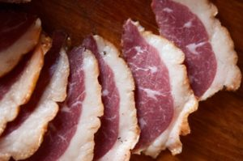

Publicado em 20 de junho de 2017 por Bruna Maganhe e Leonardo Mazzero
As exportações brasileiras de carnes e miúdos de aves posicionam o Brasil como principal exportador mundial do segmento, o que representou divisas de R$ 22,8 bil hões, em 2015, com embarque de 4,1 milhões de toneladas. Com um plantel de 5,79 bilhões de cabeças, o Brasil produz 13,14 milhões de toneladas de carne de frango por ano (CNA, 2016).
Em um cenário tão promissor, pouco se fala sobre produção de outras espécies de aves, com caracterizações especiais da carne, utilização ornamental e até produção de itens de moda como é o caso das aves aquáticas. Apesar disso, em alguns lugares do país a demanda por esse tipo de produto é relevante, devido a hábitos culturais e deve ser levada em consideração.
Os sistemas de produção dessas aves vão de sistemas simples de pequena escala como, por exemplo, criação de casais para alimentação familiar ou regional ou até sistemas mais complexos, com granjas e integradoras de grande porte, as quais a criação se assemelha muito à dos frangos.
No caso dos gansos em particular, estas aves conseguem biologicamente sobreviver e produzir a partir do pastejo, tendo aproveitando cerca de 20% da forragem, o que em galinhas é de 3 a 5%, devido à ação de cecos funcionais com fermentação microbiana no intestino segundo o que relata Holderread, 1993. Essa é uma vantagem relativa muito grande ao produtor, pois pode reduzir grande parte do custo de produção que é destinado à compra de grãos que compõem a base dos concentrados de alimentação animal.
Ganso da Raça Toulouse Marreco de Pequim
Segundo Virginia Franco, presidente da Associação de Criadores de Aves de Raça Pura (ABC AVES), “O uso de aves aquáticas (patos, marrecos, gansos), na alimentação é cultural. Os países europeus têm esse hábito. No Brasil o hábito é a carne de frango, bovino e suínos. Na região sul do país, onde predomina a colonização germânica, o hábito do ganso nas mesas de Natal, por exemplo, ainda é predominante, ao passo que em outras regiões, nessa festividade predomina o peru”
De acordo com Guy (2002), a carne de ganso, por exemplo, tem certas características que permitem obter produtos atraentes e saborosos. A gordura subcutânea contribui significativamente para dar à carne um sabor específico, sendo popular em países como França, Alemanha e Inglaterra. A carne dessas aves também apresenta coloração mais escura que a tradicional carne de frango e em alguns cortes se assemelha a carne bovina, como é o caso do corte chamado de ‘goose steak’ ou “picanha de ganso”, que consiste em um corte do peito da ave

Tanto os gansos como os marrecos são popularmente utilizados em muitos países europeus para a produção de carne, e patê de fígado (o famoso foie gras), mas no Brasil esses animais são utilizados na maioria das vezes para ornamentar sítios e fazendas ou em pequenas propriedades para corte e utilização das plumas.
Apesar de pouco comum, a carne de marreco congelada por ser encontrada em supermercados de Concórdia (SC) por preços valorizados. Em restaurantes, somados os ingredientes e o trabalho, uma refeição à base dessas aves pode custar bem caro devido ao seu posicionamento como especial e diferenciada, sendo especialmente apreciada por consumidores da chamada classe A (Avicultura industrial, 2003).
Visando oferecer um produto diferenciado, a Villa Germania, uma empresa de Santa Catarina, trás ao mercado produtos de qualidade visando o abastecimento do mercado nacional e exportação, contando ainda com receitas e dicas de preparo para os produtos oferecidos. Além das tradicionais peças inteiras, a empresa investiu em produtos diferenciados, produzindo hambúrgueres, carne moída, cortes especiais, carnes recheadas, entre outros.
Apesar de não existem estatísticas muito confiáveis referentes a este mercado, considerando o número de pessoas que praticam a atividade como hobby, as formas que o produtor tem para aumentar o sucesso de seu empreendimento são diversas, ainda mais considerando a variedade de produtos possíveis na produção.
Virginia Franco conclui: “a criação é um bom nicho de investimento para criadores, sendo necessária, no entanto, intensa divulgação uma vez que a população brasileira mostra-se resistente a novos hábitos alimentares”.
Referências
Avicultura industrial. Acesso em 14/06/17. Disponível em: <Clique Aqui
Assessoria de Comunicação CNA. Há 12 anos avicultura coloca o Brasil na mais alta posição em exportação de frango. CNA, Brasília, 27 de ago. de 2016. Disponível em: < Clique Aqui>. Acesso em: 14 jun. 2017.
GUY, G., BUCKLAND, R. Production des Oies. FAO Production et Sante´ animale. Roma, 2002.
HOLDERREAD, D. The Book of Geese. The Hen House. Oregon, 1993.